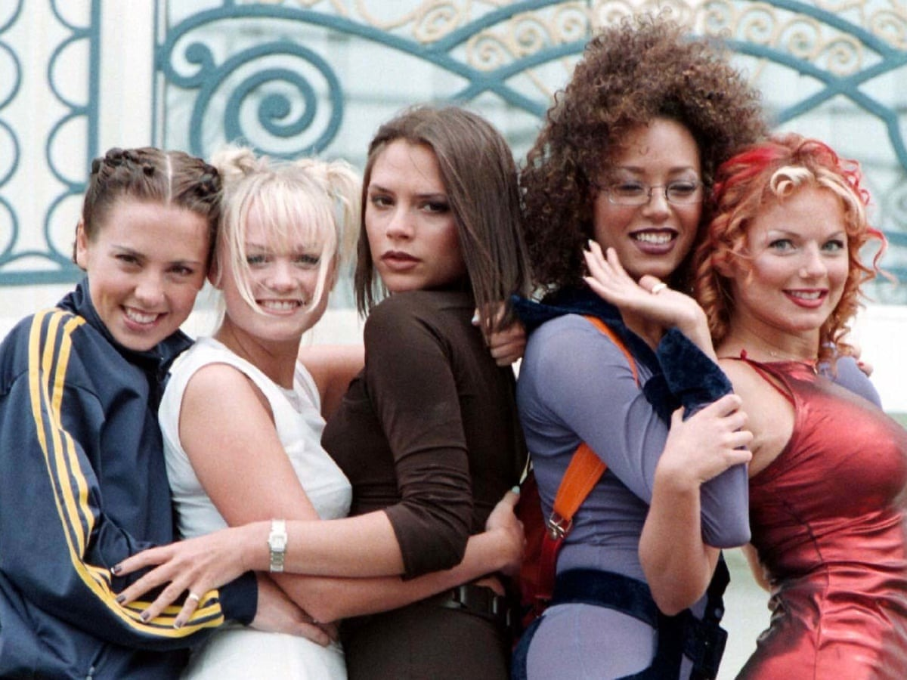

SPICE GIRLS
Girlband britânica criada originalmente em 1994. O grupo é composto por Melanie Brown (Scary Spice), Melanie Chisholm (Sporty Spice), Emma Button (Baby Spice), Geri Halliwell (Ginger Spice) e anteriormente Victoria Beckman (Posh Spice).Tornaram-se fenonomeno global com seu primeiro single “Wannabe” que alcançou o topo das paradas em mais de 30 países. Estouraram nos anos 90 e seu primeiros álbuns de studio venderam milhões de cópias, tornando-se o girl group que mais vendeu em todos os tempos e o maior fenômeno na musica pop britânica após os Beatles. Sob a orientação de Simon Fuller, as Spice Girls adotaram o merchandising e se tornaram um recurso regular na imprensa britânica e global. Levantando a banadeira do “girl power” foram ícones da década de 1990.